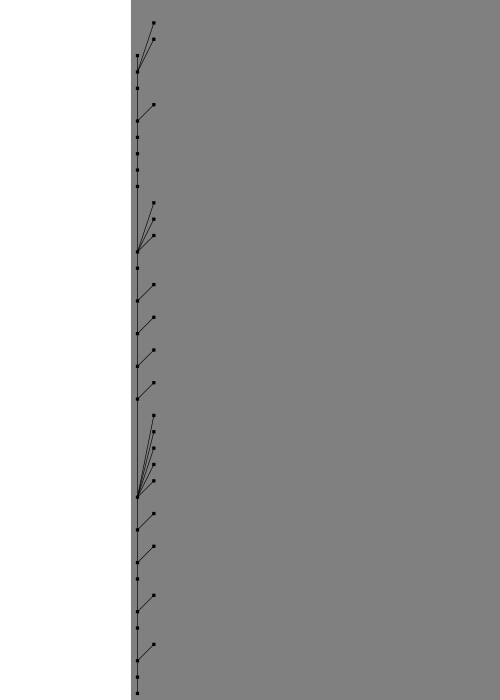
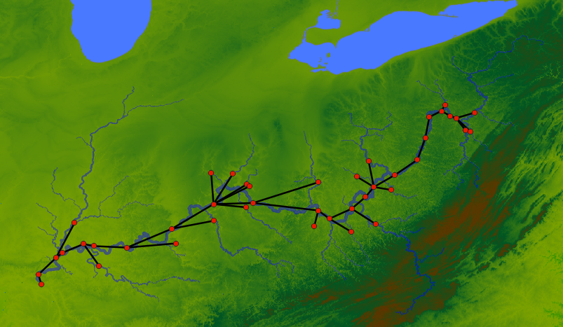
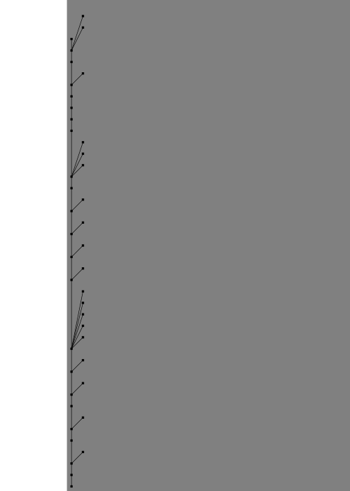

Import Export Files
Similar to how you can load network files, you can load attributes from files as well. Direct load of TOML format is supported from the internal plugins, while you might need external plugins for other formats.
load_attrs function takes a template, and reads a different files for each node to load the attributes from.
network load_file("data/ohio.network")
node attributes.load_attrs("data/attrs/{_NAME}.toml")
network svg_save(
"output/ohio-import-export.svg",
label="{_NAME} (A = {basin_area?:f(2)})",
height=700,
bgcolor="gray"
)
Results:

You can use the render function to see if the files being loaded are correct. Here we can see the examples for the first 4 nodes:
network load_file("data/ohio.network")
node(INDEX<4) render("data/attrs/{_NAME}.toml")
Results:
{
smithland = "data/attrs/smithland.toml",
golconda = "data/attrs/golconda.toml",
old-shawneetown = "data/attrs/old-shawneetown.toml",
mountcarmel = "data/attrs/mountcarmel.toml"
}
You can also read a attributes from string, so you can combine that with files.from_file and load it.
network load_file("data/ohio.network")
env.somevalue = attributes.parse_attrmap(
files.from_file("data/attrs/smithland.toml")
);
env.somevalue.basin_area
env.somevalue.length
Results:
371802.16
1675.95
You can export csv files
network load_file("data/ohio.network")
node attributes.load_attrs("data/attrs/{_NAME}.toml")
network table.save_csv("output/ohio-export.csv", ["NAME", "basin_area", "length"])
network command("cat output/ohio-export.csv | head", echo=true)
Results:
$ cat output/ohio-export.csv | head
NAME,basin_area,length
"smithland",371802.16,1675.95
"golconda",370942.26,1701.32
"old-shawneetown",363656.85,1772.27
"mountcarmel",74359.92,1918.08
"jt-myers",277962.45,1791.07
"evansville",275482.9,1878.29
"calhoun",18540.88,1992.5
"newburgh",253065.62,1903.58
"cannelton",249382.5,1993.72
GIS Files
First we make a GIS file by exporting. The image below shows the resulting points (red) from the shapefile and connections (black) from the Geopackage file when we visualize this on QGIS (with background of Terrain and Ohio River tributaries).
network load_file("data/ohio.network")
node attributes.load_attrs("data/attrs/{_NAME}.toml")
node.geometry = render("POINT ({lon} {lat})");
network gis.gis_save_nodes(
"output/ohio-nodes.shp",
"geometry",
{
NAME = "String",
basin_area = "Float",
length = "Float"
}
)
# Exporting the edges
network gis.gis_save_connections(
"output/ohio-connections.gpkg",
"geometry"
)
Results:

The geometry attributes should be WKT String.
Now we are using the generated GIS files to load the network and the attributes:
network gis.gis_load_network("output/ohio-connections.gpkg", "start", "end")
network gis.gis_load_attrs("output/ohio-nodes.shp", "NAME")
network svg_save(
"output/ohio-from-gis.svg",
label="{_NAME} (A = {basin_area?:f(2)}; L = {length:f(1)})",
height=700,
bgcolor="gray"
)
Results:

As we can see the plugins make it easier to interoperate with a lot of different data formats. Here GIS plugin will support any file types supported by gdal. Similarly, other formats can be supported by writing plugins.